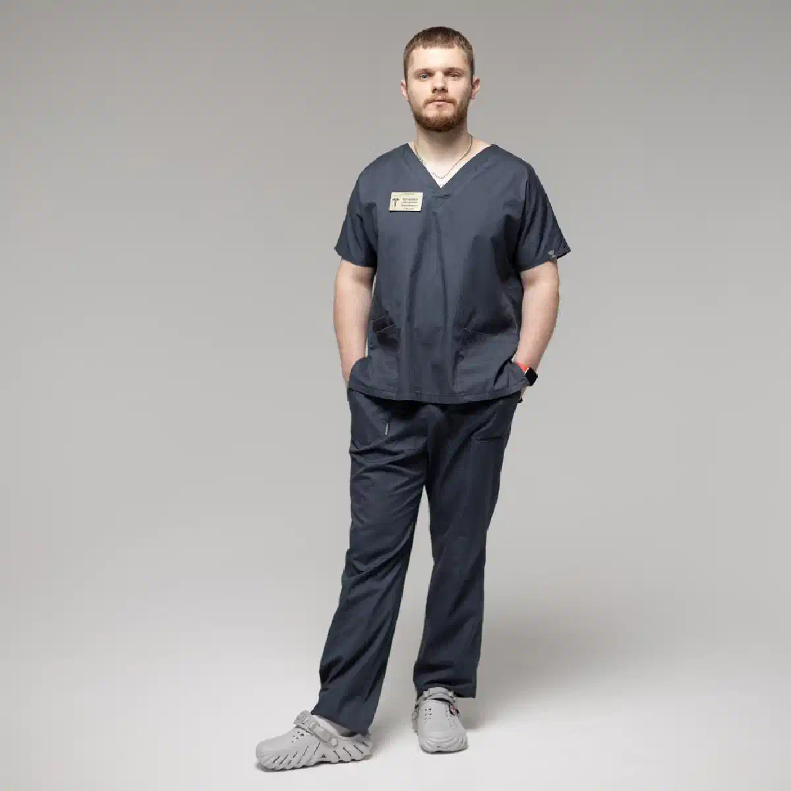

+38(068)
79 72 782
+38(068)
79 72 782Кодирование от алкоголизма уколом Аквилонг в Харькове
Медикаментозное лечение алкогольной зависимости


Бесплатная консультация, работаем круглосуточно 24/7
Медикаментозное лечение алкогольной зависимости

Дата написания: 22 окт. 2026 г.
Последнее обновление: 22 окт. 2026 г.
Кодирование от алкоголизма уколом Аквилонг в Харькове — направление медикаментозной помощи пациентам, которые стремятся отказаться от употребления спиртных напитков и снизить вероятность повторных алкогольных срывов. Название Аквилонг используется в предложениях услуг по противоалкогольному кодированию, однако перед проведением процедуры необходимо документально подтвердить состав, лекарственную форму, регистрационный статус и инструкцию конкретного препарата. В программах медикаментозного кодирования могут применяться средства на основе дисульфирама, действие которого связано с нарушением метаболизма этанола и развитием неприятной, потенциально опасной реакции при употреблении алкоголя. Важным дополнением к лекарственной терапии является психотерапия, направленная на формирование устойчивой мотивации к трезвости, устранение психологической тяги и профилактику повторных запоев.
Кодирование от алкоголизма уколом Аквилонг обычно описывается как медикаментозная процедура, направленная на поддержание отказа от спиртного. При этом медицинские свойства конкретного средства должны определяться не его коммерческим названием, а подтверждённым составом и официальной инструкцией. Если в программе используется препарат на основе дисульфирама, механизм воздействия заключается в подавлении активности фермента ацетальдегиддегидрогеназы, участвующего в переработке продуктов распада этанола. При употреблении алкоголя на фоне действия дисульфирама возможно накопление ацетальдегида, вызывающего выраженное ухудшение самочувствия. Такой механизм формирует фармакологическое препятствие для употребления спиртного, однако сам по себе не устраняет психологические причины зависимости. Именно поэтому медикаментозное кодирование рекомендуется рассматривать совместно с психотерапевтической поддержкой.
Аквилонг — название, встречающееся в коммерческих предложениях медикаментозного кодирования от алкогольной зависимости. В ряде описаний его относят к средствам на основе дисульфирама, однако единая официально подтверждённая информация о составе, инъекционной форме и фармакокинетике конкретного препарата отсутствует в доступных проверенных источниках. Поэтому перед использованием средства необходимо установить его производителя, международное непатентованное наименование действующего вещества, регистрационные данные, дозировку и разрешённый способ введения. Важно отличать торговое название услуги от зарегистрированного лекарственного препарата. Если предполагается применение дисульфирама, следует учитывать, что это вещество используется в лечении алкогольной зависимости как средство, создающее отрицательную реакцию на употребление спиртного.
Дисульфирам применяется в терапии алкогольной зависимости благодаря способности изменять метаболизм этанола. В обычных условиях алкоголь в организме сначала превращается в ацетальдегид, а затем под действием ферментных систем перерабатывается дальше. Дисульфирам подавляет активность ацетальдегиддегидрогеназы, вследствие чего при употреблении алкоголя может происходить накопление токсичного ацетальдегида. Это вызывает так называемую дисульфирам-алкогольную реакцию, проявления которой включают покраснение лица, тошноту, рвоту, головную боль, потливость, учащённое сердцебиение, снижение артериального давления и выраженную слабость. В тяжёлых случаях возможны опасные нарушения сердечного ритма, дыхания и кровообращения. При этом дисульфирам не устраняет непосредственно психологическую тягу к алкоголю и не гарантирует отказа от употребления спиртного. Основная задача такого лечения заключается в поддержании осознанного решения пациента сохранять трезвость.
Отличие кодирования под названием Аквилонг от других методов лечения должно определяться фактическим действующим веществом, лекарственной формой и подтверждёнными особенностями применения. Если речь идёт о дисульфираме, его действие принципиально отличается от налтрексона. Дисульфирам создаёт риск неприятной реакции при употреблении этанола, тогда как налтрексон воздействует на опиоидные рецепторы и может уменьшать вероятность возвращения к тяжёлому употреблению алкоголя. Психотерапевтические методы работают преимущественно с мотивацией, поведением, привычками и эмоциональными причинами зависимости. Отдельное место занимают препараты, применяемые для поддержания воздержания после прекращения употребления алкоголя. У каждого подхода имеются собственные показания, ограничения и доказательная база. Выбор лечения не должен определяться исключительно названием препарата или предполагаемой продолжительностью кодирования. При необходимости лечение алкогольной зависимости в Харькове может включать медикаментозную терапию, индивидуальную психотерапию, семейное консультирование и дальнейшее наблюдение. Наиболее подходящая программа определяется после обследования пациента и обсуждения всех доступных методов.
Медикаментозное кодирование может рассматриваться для совершеннолетних пациентов с алкогольной зависимостью, которые осознают необходимость лечения, добровольно стремятся отказаться от спиртного и готовы соблюдать медицинские рекомендации. Если предполагается применение дисульфирама, особенно важно наличие устойчивой мотивации к полному воздержанию, поскольку употребление алкоголя во время действия препарата может вызвать опасную реакцию. Метод не следует выбирать автоматически всем пациентам с хроническим алкоголизмом. Решение зависит от состояния печени, сердечно-сосудистой системы, психического здоровья, сопутствующих заболеваний и лекарственных взаимодействий. Отдельной оценки требуют пациенты с длительными запоями, перенесёнными судорогами, алкогольным делирием и выраженными симптомами отмены. Перед назначением врач определяет, подходит ли человеку дисульфирам или целесообразнее рассмотреть альтернативные методы профилактики рецидивов. Консультация нарколога в Харькове позволяет оценить тяжесть зависимости, выявить противопоказания и обсудить медикаментозные и психотерапевтические варианты помощи.
Обсуждение медикаментозного кодирования целесообразно после прекращения употребления алкоголя, стабилизации физического состояния и оценки риска повторных срывов. Поводом для обращения могут быть неоднократные эпизоды потери контроля над количеством выпитого, продолжительные запои, выраженная тяга к спиртному и безуспешные попытки самостоятельно сохранить трезвость. Однако наличие этих признаков само по себе не означает, что пациенту обязательно необходимо кодирование. Врач должен определить характер алкогольного расстройства, оценить медицинские риски и выяснить предпочтения человека относительно лечения. Если рассматривается дисульфирам, необходимо предварительно исключить состояние опьянения, острый синдром отмены и противопоказания. Дополнительно оценивается готовность пациента соблюдать полный отказ от спиртного. Медикаментозная профилактика рецидивов наиболее обоснованна в рамках последовательной лечебной программы, которая может включать психотерапию и регулярное наблюдение. Анонимное лечение алкоголизма позволяет обратиться за профессиональной помощью с соблюдением требований конфиденциальности медицинской информации.
Эффективность процедуры, обозначаемой названием Аквилонг, нельзя достоверно оценить без подтверждения конкретного препарата, его лекарственной формы и наличия клинических исследований. При этом дисульфирам как действующее вещество изучался в терапии алкогольной зависимости и может быть полезен отдельным мотивированным пациентам, особенно при соблюдении назначений и медицинском наблюдении. Результат зависит не только от лекарства, но и от степени зависимости, психологического состояния, семейной поддержки и готовности человека изменить привычный образ жизни. Важно учитывать, что дисульфирам не блокирует саму психологическую тягу к алкоголю и не устраняет автоматически причины злоупотребления спиртным. Поэтому однократная процедура, даже если она заявлена как длительно действующая, не может считаться гарантией устойчивой трезвости. Для профилактики повторных запоев могут применяться психотерапевтические методы с изученной эффективностью, медикаментозная поддержка и программы восстановления. Комплексное лечение хронического алкоголизма позволяет работать одновременно с медицинскими последствиями зависимости, психологическими факторами и социальными обстоятельствами, повышающими риск повторного употребления алкоголя.
Предполагаемым удобством инъекционного кодирования является отсутствие необходимости ежедневно принимать лекарственные препараты, если используется официально разрешённая пролонгированная форма с подтверждённой продолжительностью действия. Однако утверждать наличие такого преимущества непосредственно у Аквилонга без соответствующей инструкции нельзя. Для медикаментозного лечения на основе дисульфирама характерна возможность поддерживать воздержание благодаря информированности пациента о риске реакции на алкоголь. Вместе с тем метод имеет существенные ограничения. Дисульфирам не лечит острый синдром отмены, не устраняет психологические причины зависимости и может вызывать побочные эффекты. Его применение требует учёта противопоказаний, состояния печени, сердечно-сосудистой системы и возможных лекарственных взаимодействий. Отдельную опасность представляет употребление алкоголя во время действия препарата. Инъекционное введение средства с неподтверждённым составом или сроком действия не может рассматриваться как безопасная альтернатива зарегистрированным лекарственным формам. Поэтому кодирование от алкогольной зависимости необходимо выбирать после медицинской консультации и обсуждения доступных методов лечения с подтверждённой эффективностью и безопасностью.
После длительного запоя пациенту прежде всего необходима оценка общего состояния и риска осложнений, связанных с прекращением употребления алкоголя. При сформировавшейся физической зависимости резкий отказ от спиртного может сопровождаться алкогольным синдромом отмены, проявляющимся тремором, потливостью, тревогой, бессонницей, тахикардией и повышением артериального давления. В тяжёлых случаях возможно развитие судорог, галлюцинаций и алкогольного делирия. Непосредственно во время выраженной абстиненции медикаментозное кодирование не проводится. Сначала требуется стабилизировать состояние пациента, провести необходимое обследование и при показаниях назначить лечение синдрома отмены. Только после устранения острых нарушений врач может обсудить способы профилактики повторных срывов. Если рассматривается препарат на основе дисульфирама, необходимо убедиться в отсутствии противопоказаний и готовности пациента соблюдать полный отказ от алкоголя. Вывод из запоя в Харькове должен проводиться с учётом тяжести состояния, а последующая противорецидивная терапия может сочетаться с психотерапией и регулярным наблюдением нарколога.
Стоимость кодирования уколом Аквилонг в Харькове начинается от От 12000 грн.
В рекламных предложениях медикаментозного кодирования иногда указываются сроки один, три или пять лет. Однако заявленный срок процедуры необходимо отличать от клинически подтверждённой продолжительности действия конкретного лекарственного средства. Для Аквилонга не удалось подтвердить официальную инструкцию, обосновывающую указанные периоды действия одной инъекции. Поэтому утверждать, что препарат обеспечивает фармакологическую защиту от употребления алкоголя на один, три или пять лет, было бы необоснованно. Продолжительность действия любого лекарства зависит от его состава, лекарственной формы, способа введения и фармакокинетических характеристик. Психологическая установка на определённый срок также не означает гарантированной защиты от рецидива. Если пациенту предлагается длительное кодирование, необходимо уточнить, на каких клинических и регистрационных данных основаны такие обещания. Для устойчивого восстановления важнее подобрать эффективную программу лечения алкогольной зависимости, включающую медикаментозную поддержку при показаниях, психотерапию и долгосрочную профилактику повторных срывов.
Подготовка к медикаментозному кодированию начинается с консультации нарколога и оценки состояния здоровья. Врач уточняет продолжительность алкогольной зависимости, частоту и длительность запоев, количество употребляемого спиртного, предыдущий опыт лечения и наличие осложнений при прекращении употребления. Особое внимание уделяется заболеваниям печени, сердца, почек, психическим расстройствам и принимаемым лекарственным препаратам. Перед процедурой пациент должен находиться в трезвом состоянии и быть способен предоставить добровольное информированное согласие. При наличии физической зависимости самостоятельный резкий отказ от алкоголя может быть опасным, поэтому иногда требуется предварительное лечение абстиненции. По медицинским показаниям назначаются лабораторные исследования, оценка функции печени, почек и другие обследования. Если планируется применение дисульфирама, необходимо обсудить вероятность опасной реакции на алкоголь и возможные взаимодействия с другими веществами.
Необходимая продолжительность воздержания от алкоголя перед кодированием зависит от подтверждённого действующего вещества, лекарственной формы и состояния пациента. Универсального безопасного периода для всех методов не существует. При назначении дисульфирама препарат нельзя применять во время алкогольного опьянения. Согласно клиническим рекомендациям, начало лечения дисульфирамом допускается только после установленного периода воздержания, при этом отдельные руководства рекомендуют не менее 24 часов после последнего употребления алкоголя. Однако этот минимальный интервал не означает, что пациент полностью восстановился после запоя или не нуждается в лечении абстиненции. При длительном употреблении спиртного врач может рекомендовать более продолжительную подготовку с учётом риска судорог, алкогольного делирия и других осложнений. Важно предварительно оценить физическое состояние, исключить остаточное опьянение и определить необходимость медицинской стабилизации. Консультация нарколога перед кодированием помогает установить безопасную последовательность лечебных мероприятий и предотвратить необоснованное проведение процедуры сразу после употребления спиртного.
Консультация нарколога является обязательным этапом выбора медикаментозной терапии алкогольной зависимости. Во время обследования врач собирает анамнез, уточняет продолжительность злоупотребления спиртным, частоту запоев, выраженность психологической тяги и наличие симптомов отмены. Дополнительно оцениваются сердечно-сосудистые заболевания, нарушения функции печени и почек, психические расстройства, предыдущие реакции на лекарственные препараты и возможные противопоказания. Если рассматривается дисульфирам, пациенту необходимо подробно объяснить механизм действия, вероятность побочных эффектов и опасность употребления алкоголя во время лечения. Перед назначением средства под названием Аквилонг также требуется документально подтвердить его состав, регистрационные данные и разрешённый способ введения. Врач обсуждает альтернативные методы, включая налтрексон, другие лекарственные средства по показаниям и психотерапевтическую помощь. Консультация и вызов нарколога в Харькове позволяют получить профессиональную оценку состояния, определить необходимость дополнительных обследований и подобрать обоснованную программу лечения с учётом индивидуальных особенностей пациента.
Перед кодированием пациентам с длительным запоем или выраженным синдромом отмены может потребоваться предварительная медицинская помощь. Резкое прекращение употребления алкоголя при физической зависимости способно вызвать тремор, потливость, тревожность, бессонницу, тахикардию и повышение артериального давления. В тяжёлых случаях возможны судороги, галлюцинации и алкогольный делирий. Тактика лечения определяется наркологом с учётом состояния пациента, длительности запоя и сопутствующих заболеваний. Для устранения абстиненции могут назначаться лекарственные препараты, коррекция дефицита тиамина и водно-электролитных нарушений. Вывод из запоя на дому в Харькове возможен только при стабильном состоянии пациента и отсутствии высокого риска осложнений. Капельница от алкоголя применяется по медицинским показаниям, преимущественно при обезвоживании. При тяжёлой абстиненции, судорогах или нарушениях сознания необходима экстренная помощь и стационарное лечение. После стабилизации состояния можно рассматривать медикаментозное кодирование и профилактику повторных срывов.
Организация медикаментозного кодирования начинается с оценки состояния пациента и определения возможности применения выбранного лекарственного средства. Перед инъекцией врач должен проверить название препарата, его состав, происхождение, регистрационный статус, срок годности и официально разрешённый способ введения. Для Аквилонга эти сведения требуют отдельного документального подтверждения, поэтому нельзя заранее утверждать конкретный путь введения, дозировку или продолжительность процедуры. Если после обследования выбран разрешённый инъекционный препарат, медицинский специалист проводит вмешательство с соблюдением инструкции и требований асептики. До начала лечения пациенту объясняют предполагаемый эффект, противопоказания, возможные осложнения и правила поведения после процедуры. При использовании дисульфирама особое внимание уделяется рискам сочетания лекарства с алкоголем и некоторыми спиртосодержащими продуктами. После медицинского вмешательства врач определяет необходимость наблюдения и дальнейших контрольных консультаций.
Противопоказания к применению средства под названием Аквилонг невозможно достоверно определить без подтверждённой официальной инструкции и состава. Если предполагается использование дисульфирама, необходимо учитывать противопоказания и ограничения, характерные для данного действующего вещества. К ним относятся определённые тяжёлые заболевания сердечно-сосудистой системы, серьёзные нарушения функции печени, некоторые психические расстройства и другие состояния, при которых риск терапии может превышать ожидаемую пользу. Особой осторожности требуют пациенты с заболеваниями почек, сахарным диабетом, неврологическими нарушениями и сопутствующей медикаментозной терапией. Дисульфирам нельзя назначать пациенту в состоянии алкогольного опьянения или без его добровольного информированного согласия. При выраженном синдроме отмены сначала необходимо провести соответствующее лечение и стабилизировать состояние.
Последствия употребления алкоголя после кодирования зависят от фактического действующего вещества и его фармакологического механизма. Если пациент получает дисульфирам, даже небольшое количество спиртного способно вызвать дисульфирам-алкогольную реакцию. Её симптомы могут включать покраснение лица, ощущение жара, головную боль, тошноту, многократную рвоту, учащённое сердцебиение, головокружение и снижение артериального давления. В тяжёлых случаях возможны нарушения сердечного ритма, выраженная гипотензия, потеря сознания и другие опасные осложнения. Выраженность реакции невозможно надёжно предсказать заранее. При этом средства на основе налтрексона имеют другой механизм действия и не вызывают характерной дисульфирам-алкогольной реакции. Именно поэтому перед кодированием необходимо достоверно знать состав используемого препарата. Намеренно употреблять алкоголь с целью проверки эффективности процедуры недопустимо.
Кодирование от алкоголизма без добровольного информированного согласия пациента недопустимо. Человек должен самостоятельно понимать цель лечения, особенности выбранного метода, возможные побочные эффекты и последствия употребления спиртного во время медикаментозной терапии. Особенно опасно скрытое применение дисульфирама, поскольку сочетание данного вещества с алкоголем способно вызвать тяжёлую токсическую реакцию. Попытки принудительного кодирования, введения препаратов без ведома пациента или проведения процедуры под психологическим давлением не соответствуют принципам безопасной медицинской помощи. Родственники людей с алкогольной зависимостью нередко сталкиваются с отрицанием заболевания, конфликтами и отказом от обращения к наркологу. В таких обстоятельствах полезными могут быть мотивационные беседы, семейные консультации и психологическая поддержка. Задача близких заключается в создании условий для добровольного обращения за лечением, а не в принуждении к медицинскому вмешательству. Анонимная помощь при алкогольной зависимости может включать консультации как для самого пациента, так и для членов его семьи с соблюдением требований конфиденциальности.
Сравнение Аквилонга с Эспераль и Тетлонгом необходимо проводить по подтверждённому составу, зарегистрированной лекарственной форме, способу введения и результатам клинических исследований. Название Эспераль традиционно связано с дисульфирамом, который используется в противорецидивной терапии алкогольной зависимости. Тетлонг также упоминается в практике медикаментозного кодирования, однако характеристики конкретной лекарственной формы следует проверять по её официальной инструкции. Для Аквилонга доступная информация о составе и длительности действия требует дополнительного подтверждения. Если сравниваемые средства действительно содержат дисульфирам, их основной фармакологический механизм будет связан с подавлением активности ацетальдегиддегидрогеназы. Однако одинаковое действующее вещество не означает идентичную продолжительность действия, биодоступность или безопасность различных лекарственных форм. Утверждения о гарантированном преимуществе одного торгового названия над другим должны подтверждаться клиническими данными.
Психологическая поддержка является важной частью комплексного лечения алкогольной зависимости независимо от выбранного медикаментозного метода. Даже если пациент принимает дисульфирам или другое средство для профилактики повторного употребления, психологическая тяга к алкоголю может сохраняться. Причинами срывов нередко становятся стресс, семейные конфликты, эмоциональное истощение, привычное окружение и отсутствие альтернативных способов справляться с трудностями. Поэтому после медикаментозного кодирования рекомендуется продолжать психотерапевтическую работу. Одним из изученных подходов является когнитивно-поведенческая терапия, которая помогает распознавать ситуации повышенного риска, корректировать привычные реакции и формировать навыки преодоления алкогольной тяги. Дополнительно могут применяться мотивационное консультирование, семейная психотерапия, группы взаимопомощи и программы реабилитации. Важно заранее обсудить план действий при появлении желания выпить, а также определить возможности своевременного обращения за поддержкой. Психотерапия при алкогольной зависимости помогает укрепить мотивацию, восстановить повседневную активность и уменьшить риск повторных срывов.
Анонимное кодирование от алкоголизма в Харькове представляет интерес для пациентов, которые хотят получить медицинскую помощь при алкогольной зависимости с соблюдением конфиденциальности личной информации. Обращение к наркологу нередко сопровождается опасениями относительно разглашения диагноза, отношения окружающих и возможных социальных последствий. При выборе медицинского учреждения важно уточнить порядок оформления консультации, ведения медицинской документации и защиты персональных данных. Конфиденциальность должна обеспечиваться в соответствии с законодательством и принципами врачебной тайны. При этом анонимный формат обращения не отменяет необходимость полноценного медицинского обследования, информированного согласия и проверки безопасности используемых препаратов. Если пациент рассматривает кодирование под названием Аквилонг, ему необходимо предоставить подтверждённые сведения о составе, лекарственной форме и предполагаемом действии. Врач должен оценить состояние здоровья, выявить противопоказания и обсудить возможные альтернативы.
Комплексное лечение алкогольной зависимости после медикаментозного кодирования направлено на поддержание трезвости, снижение риска рецидивов и восстановление физического и психологического здоровья пациента. Кодирование не устраняет автоматически все биологические, эмоциональные и социальные механизмы зависимости, поэтому долгосрочная программа помощи может включать несколько взаимосвязанных направлений. Важное место занимает психотерапия, помогающая определить причины употребления алкоголя, изменить привычные модели поведения и сформировать навыки преодоления тяги. При наличии показаний врач может рекомендовать дополнительные лекарственные средства с доказанной эффективностью для профилактики повторного употребления. Необходимо также уделять внимание сопутствующим заболеваниям печени, сердечно-сосудистой системы, нарушениям сна, тревожным и депрессивным состояниям. Регулярные контрольные консультации позволяют оценивать результаты терапии и своевременно корректировать лечебную программу.
Круглосуточная наркологическая помощь в Харькове может потребоваться при длительном запое, алкогольной интоксикации и выраженном синдроме отмены. После прекращения употребления спиртного возможны тремор рук, тревожность, бессонница, тахикардия, потливость и повышение артериального давления. При тяжёлой абстиненции могут возникать судороги, галлюцинации, нарушения сознания и алкогольный делирий. В таких случаях необходима срочная медицинская оценка, а при судорогах, потере сознания или нарушении дыхания следует вызвать экстренную помощь по номеру 103 или 112. При стабильном состоянии пациента врач может рекомендовать амбулаторное лечение или вызов нарколога на дом в Харькове. После стабилизации состояния важно обсудить медикаментозную профилактику рецидивов и психотерапевтическую поддержку. Перед кодированием препаратом Аквилонг необходимо подтвердить его состав, безопасность и пройти медицинское обследование. Своевременная помощь нарколога позволяет подобрать индивидуальную программу лечения алкогольной зависимости.
Телефон для консультации и вызова нарколога на дом в Харькове: +38(050-021-69-57)

Статья проверена экспертом
Богоденко Констянтин
Врач анастезиолог, ординатор
Возможно интересная статья:
Чего боятся алкоголики больше всего

Кодирование от алкоголизма — это общее название методов, направленных на поддержание отказа от употребления алкоголя. В зависимости от выбранного подхода могут применяться лекарственные препараты, психотерапевтические методы или их сочетание. Перед процедурой врач оценивает состояние пациента, противопоказания и готовность соблюдать трезвость.
Механизм зависит от метода. Некоторые препараты вызывают выраженную непереносимость алкоголя или уменьшают его субъективно приятные эффекты и тягу. Психотерапевтические методы направлены на формирование устойчивой установки на трезвость и изменение отношения к употреблению алкоголя. Кодирование обычно рассматривается как часть комплексного лечения зависимости.
Применяются медикаментозные и психотерапевтические методы. К медикаментозным относят препараты на основе дисульфирама и средства, влияющие на систему вознаграждения и тягу к алкоголю, например налтрексон. Также используются психотерапевтические подходы, в том числе метод Довженко и другие техники работы с мотивацией и поведением. Конкретный метод подбирается индивидуально.
Кодирование уколом предполагает введение лекарственного препарата по назначению врача. Действие зависит от конкретного действующего вещества: одни препараты направлены на формирование непереносимости алкоголя, другие — на уменьшение тяги или эффекта от его употребления. Перед введением обязательно оцениваются противопоказания и период трезвости.
Подшивкой обычно называют введение или имплантацию препарата длительного действия, чаще всего на основе дисульфирама. Его задача — создать медицинский барьер для употребления алкоголя на определённый период. Перед процедурой пациент должен быть трезвым и пройти осмотр врача.
Метод Довженко относится к психотерапевтическим способам воздействия и основан на формировании установки на отказ от алкоголя на определённый срок. Процедура проводится без введения лекарственного препарата. Эффективность зависит от мотивации пациента и индивидуальной восприимчивости, поэтому метод лучше рассматривать как часть комплексного лечения, а не как единственный способ терапии.
Период трезвости зависит от выбранного метода, состояния пациента и используемого препарата. Во многих случаях требуется 3-5 дней полного воздержания от алкоголя. Точный срок определяет врач после консультации, поскольку проведение процедуры на фоне интоксикации или выраженного абстинентного синдрома может быть небезопасным.
Обычно сразу после длительного запоя кодирование не проводят. Сначала необходимо прекратить употребление алкоголя, стабилизировать состояние, при необходимости провести детоксикацию и дождаться уменьшения проявлений абстинентного синдрома. После этого врач оценивает готовность пациента к кодированию и выбирает подходящий метод.
Некоторые виды медикаментозного или психотерапевтического лечения могут проводиться на дому, если состояние пациента стабильное и выбранный метод допускает такой формат. Перед процедурой врач должен оценить противопоказания, период трезвости и общее состояние. Методы, требующие хирургического вмешательства, специального оборудования или наблюдения, проводятся в медицинском учреждении.
Срок действия зависит от метода и препарата. Некоторые медикаментозные варианты рассчитаны на несколько недель или месяцев, другие — на более длительный период. Психотерапевтическое кодирование также может устанавливаться на определённый срок. Конкретную продолжительность врач обсуждает с пациентом до проведения процедуры.
Да. Противопоказания зависят от выбранного метода и могут включать тяжёлые заболевания сердца и сосудов, печени, острые психические расстройства, выраженную алкогольную интоксикацию, абстинентный синдром и другие состояния. Перед кодированием необходим медицинский осмотр и уточнение хронических заболеваний и принимаемых препаратов.
Последствия зависят от метода. При использовании дисульфирама употребление алкоголя может вызвать тяжёлую реакцию с покраснением кожи, тошнотой, рвотой, падением давления, сердцебиением и другими опасными симптомами. При других методах такой реакции может не быть, но употребление алкоголя повышает риск рецидива зависимости. При ухудшении самочувствия после алкоголя на фоне кодирования необходимо обратиться за медицинской помощью.
Плановое кодирование проводится только при информированном и добровольном согласии пациента. Человек должен понимать выбранный метод, возможные риски, ограничения и последствия употребления алкоголя после процедуры. Если пациент отказывается от лечения, родственники могут обратиться к специалисту для консультации по мотивационной работе.
Это зависит от использованного метода и препарата. В некоторых случаях врач может скорректировать лечение или отменить действие определённых лекарственных схем, но «раскодирование» возможно не для всех методов и не означает мгновенного устранения действия препарата. Решение принимается только после консультации с врачом и оценки причины, по которой пациент хочет прекратить действие кодирования.
Александр

Решила сделать укол от алкоголизма по рекомендации подруги, которая проходила эту процедуру в этом же центре. Я сомневалась, но врачи всё объяснили, успокоили. После укола не чувствую тяги к алкоголю, хотя раньше сложно было представить день без выпивки. Сейчас наслаждаюсь трезвостью, чувствую себя намного лучше.
Анонимно
Дуже довго не міг самостійно позбавитися залежності, тому зважився на підшивку. Процедура пройшла успішно, і з того часу я навіть не думаю про спиртне. Страх перед можливими наслідками допомагає триматися на плаву, а підтримка фахівців – величезна підмога у цьому нелегкому шляху. Центр надає як фізичну, а й моральну допомогу. Вдячний їм за другий шанс.
Анонимно
Я никогда не думал, что психологическое воздействие может настолько сильно повлиять на мою жизнь. Врач помог осознать всю серьезность ситуации, и теперь алкоголь не вызывает у меня никакого интереса. Процедура безопасна и эффективна, рекомендую тем, кто хочет по-настоящему изменить свою жизнь.
Анонимно
Я прошла кодирование гипнозом, и это было удивительное переживание. Во время сеанса я почувствовала глубокое расслабление, а потом – будто внутри что-то изменилось. Сейчас я свободна от алкоголя и наслаждаюсь этим состоянием. Благодарю центр за профессионализм и заботу! Отдельная благодарность Станиславу Вячеславовичу
Анонимно
Чесно кажучи, боявся рецидиву, але з процедури минуло півроку, і я навіть не думаю про випивку. Життя почало змінюватися на краще. Дякуємо лікарям за підтримку та мотивацію!
Анонимно
Після багаторічної боротьби із залежністю вирішила звернутись в клінку. Спочатку переживала, але лікарі дуже докладно розповіли про процес та можливі наслідки. Зараз я не п’ю вже 8 місяців і почуваюся чудово. Я така щаслива, що знайшла цей центр і знайшла контроль над своїм життям.
Анонимно
Метод Долженко казался мне странным, но я решил попробовать. Оказалось, что это не просто кодировка, а глубокая работа с психикой. Это позволило мне кардинально изменить отношение к алкоголю. Уже год я не пью, и не планирую возвращаться к прежней жизни. Простое человеческое спасибо!
Анонимно
Гипноз помог мне избавиться от постоянной тяги к алкоголю. После сеансов я заметила, что стала спокойнее и увереннее в себе. Теперь алкоголь меня больше не интересует. Центр мне очень помог, и я благодарна за их заботу и поддержку.
Номер телефона:
+380 (68) 797 27 82
+380 (50) 021 69 57
Адрес наркологического центра вашего города уточняйте по
телефону
Работаем в: Киеве, Одессе, Львове, Харькове, Днепре,
Запорожье, Черкассах, Чугуеве, Черноморске, Каменском
Telegram: t.me/umbrellaplus
График работы: Круглосуточно